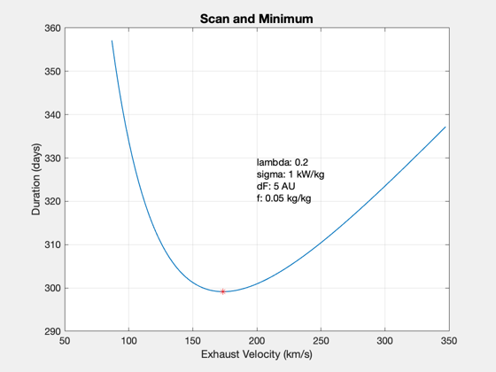
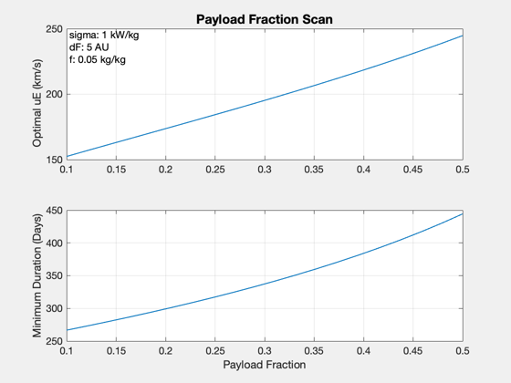

Contents
Optimal impulse for straight-line trajectories
For a given payload fraction and engine specific power, find the specific impulse which minimizes the duration to the target. ------------------------------------------------------------------------ See also: OptimalImpulseDuration, Straight2DStructure, ComputeDurationFraction, Plot2D ------------------------------------------------------------------------
%-------------------------------------------------------------------------- % Copyright (c) 2022 Princeton Satellite Systems, Inc. % All rights reserved. %--------------------------------------------------------------------------
Select a destination (distance)
aus = [5 35 125]; select = 1;
Constants
DAY = 86400; % s AU = Constant('au');
Setup
d = Straight2DStructure; d.dF = aus(select)*AU; % km d.sigma = 1000; % W/kg d.eta = 1; d.f = 0.05; % desired payload fraction lambda = 0.2;
Run
uEOpt = OptimalImpulseDuration( d, lambda ); % uE scan to prove minimum uEs = linspace(0.5*uEOpt,2*uEOpt); tFs = zeros(size(uEs)); for k = 1:length(uEs) d.uE = uEs(k); tFs(k) = ComputeDurationFraction(lambda, d ); end d.uE = uEOpt; tfOpt = ComputeDurationFraction( lambda,d );
Plot
Plot2D(uEs,tFs/DAY,'Exhaust Velocity (km/s)','Duration (days)','Scan and Minimum') hold on plot(uEOpt,tfOpt/DAY,'r*'); yy = axis; text(mean(yy(1:2)),mean(yy(3:4)),... sprintf('lambda: %g\nsigma: %g kW/kg\ndF: %g AU\nf: %g kg/kg',lambda,d.sigma*1e-3,d.dF/AU,d.f),... 'fontsize',11) % lambda scan lambda = linspace(0.1,0.5,20); uEOpt = zeros(1,length(lambda)); tFs = zeros(1,length(lambda)); for k = 1:length(lambda) [uEOpt(k),tFs(k)] = OptimalImpulseDuration( d, lambda(k) ); end Plot2D(lambda,[uEOpt;tFs/DAY],'Payload Fraction',... {'Optimal uE (km/s)','Minimum Duration (Days)'},'Payload Fraction Scan') yy = axis; text(yy(1),yy(4),... sprintf(' sigma: %g kW/kg\n dF: %g AU\n f: %g kg/kg',d.sigma*1e-3,d.dF/AU,d.f),... 'fontsize',11,'VerticalAlignment','top') %-------------------------------------- % $Date$ % $Id: 952f3beafb53a4c98a77faa3539e30ff37618286 $ 